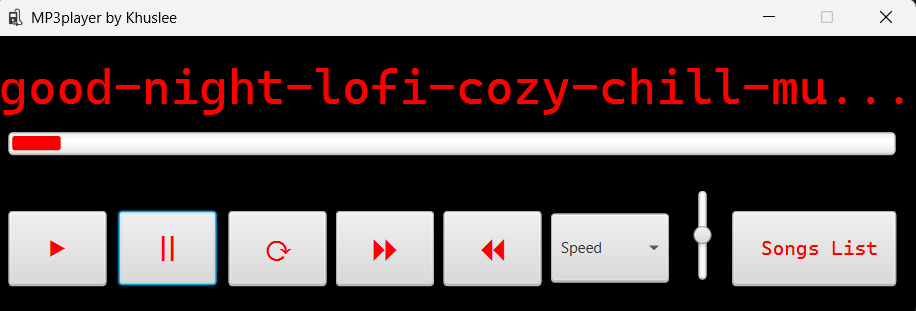
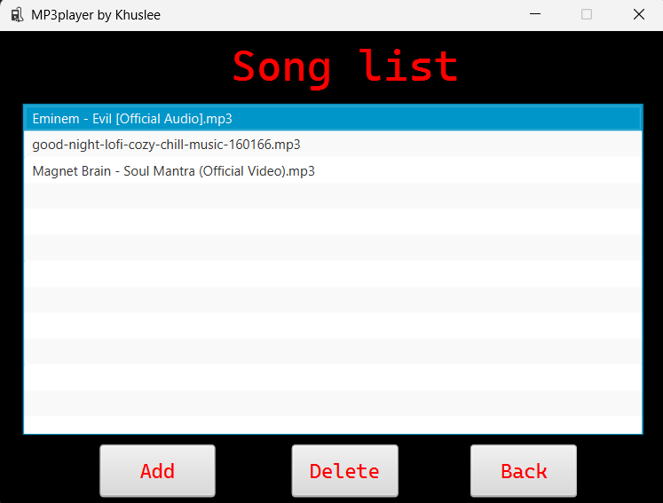

Chinkhusel Batsuuri
/
Software engineer

Bit about me
I am a second-year Software Engineering student at Macquarie University with a strong foundation in Java,
data structures.
I enjoy building efficient, practical solutions through coding and problem-solving,
and I am continually developing my skills through projects, coursework, and personal learning.
As an international student sailing from Mongolia, I bring adaptability, persistence, and a global perspective,
with a clear goal of becoming a software engineer and contributing to impactful software projects.
Mp3player
A MP3 player that lets users add and organize songs into a custom playlist.
Users can browse and load songs from their device, view them in a list, and play, pause,
or delete tracks directly within the app — providing a clean, easy-to-use interface for
managing personal music collections. The project is purely based on java, javaFX for GUI design.
⬇

Song list section where the user can add or delete a song.
